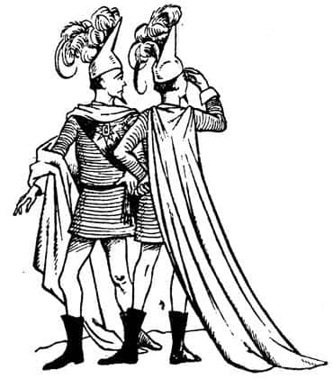
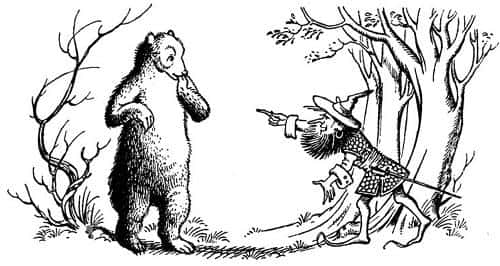
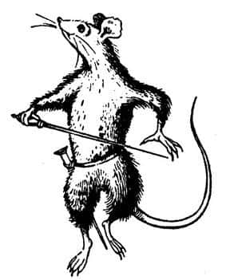

Yüce Kral Başta
“Şimdi” dedi Peter, yemeklerini bitirirlerken, “Aslan ve kızlar (yani Kraliçe Susan ve Kraliçe Lucy) yakında bir yerdeler. Onun ne zaman harekete geçeceğini bilmiyoruz. Kuşkusuz en uygun zamanı o biliyor. Bu arada, kendi başımıza yapabileceğimiz her şeyi yapmamızı ister. Caspian, sen Miraz’la meydan savaşına tutuşacak kadar güçlü değiliz diyorsun, öyle mi?”
“Korkarım evet, Yüce Kral” dedi Caspian. Peter’den çok hoşlanmıştı, ama dili sürçüyordu. Efsanelerdeki büyük krallarla karşılaşmak ona tuhaf geliyordu.
“Pekâlâ öyleyse” dedi Peter, “onu teke tek dövüşe davet edeceğim.” Kimse bunu daha önce düşünmemişti.
“Lütfen” dedi Caspian, “Onunla ben dövüşemez miyim? Babamın intikamını almak istiyorum.”
“Sen yaralısın” dedi Peter. “Hem senin meydan okumana gülüp geçmez mi? Demek istediğim, bizler senin bir kral ve bir savaşçı olduğunu biliyoruz, ama o seni bir çocuk olarak görüyor.”
“Ama, efendim” dedi Peter’in yanı başında oturan ve gözlerini ondan ayırmayan Porsuk. “Düello teklifi sizden bile gelse, kabul eder mi acaba? Ordusunun bizimkinden daha güçlü olduğunu biliyor.”
“Büyük bir ihtimalle kabul etmeyecektir” dedi Peter, “ama şansımızı deneyebiliriz. Ayrıca kabul etmese bile günün büyük bir bölümünü ulakların taşıdığı haberlerin geliş gidişiyle harcarız. O arada Aslan bir şeyler yapabilir. Ben de hiç olmazsa orduyu denetler, cephemizi güçlendiririm. Meydan okuma mesajını göndereceğim. Aslında hemen yazmak istiyorum. Divit ve mürekkebiniz var mı Üstat Doktor?”
“Bir bilginin divit ve mürekkebi her zaman yanındadır Majesteleri” diye cevapladı Doktor Cornelius.
“Pekâlâ, yazın o zaman” dedi Peter. Doktor parşömeni yayarak, hokkasını çıkarıp, kamışının ucunu sivriltirken, Peter yarı açık gözlerle arkasına yaslandı. Uzun zaman önce, Narnia’nın altın çağlarında benzer şeyler için kullandığı dili hatırlamaya çalışıyordu.
“Tamam” dedi sonunda. “Şimdi, hazır mısınız Doktor?” Doktor kamışını mürekkebe banarak bekledi. Peter aşağıdaki satırları yazdırdı:
“Aslan’ın hediyesi olarak, seçimle, kaderinde yazıldığı için ve fetihle Narnia’da tüm kralların üstünde Yüce Kral olan, Issız Adalar’ın imparatoru, Cair Paravel’in Lordu ve Aslan’ın En Soylu Tarikatının şövalyelerinden Peter’den, VIII. Caspian’ın oğlu, bir süredir Narnia’nın koruyucu Lordu olan ve şimdi de Narnia Krallığı’na göz koyan Miraz’a, Selamlar. Yazdın mı?”
“Miraz’a, virgül selamlar” diye mırıldandı Doktor. “Evet efendim.”
“Öyleyse yeni bir paragrafa başla” dedi Peter.
“Kan dökülmesini önlemek, Narnia topraklarında süregelen savaşlar nedeniyle artabilecek huzursuzluklara meydan vermemek amacıyla, güvenilir ve çok sevgili Caspian adına, soylu lordları Miraz’a ve Narnia’nın egemenliğini adı geçen Caspian’a vermemek amacıyla muhterem IX. Kral Caspian’ı ve kardeşini iğrenç, kanlı ve yasal olmayan bir yöntemle öldürmekten siz lordlarının iki kez suçlu olduğunu bildirir, adı geçen Caspian’a bahşettiğimiz krallık unvanının, Telmar kanunları uyarınca yasal olduğunu ispat için, sizi adil bir dövüşe davet ederim. Soylu varlığımızı böyle bir maceraya atmak bize zevk verecektir. Bu nedenle siz lordlarına teke tek bir dövüş için tüm içtenliğimizle meydan okuyoruz. Bu mektubu, söz konusu düellonun koşullarını siz lordlarıyla kararlaştırması için tam yetki verdiğimiz, Taş Masa’nın soylu birliğinin şövalyesi, Lamba Çoraklıkları Dükü, Batı Sınırları Kontu ve Narnia’da emrimizdeki Kral olan çok sevgili ve soylu kardeşimiz Edmund’un eliyle gönderiyoruz.
“Bu yeterli olmalı” dedi Peter, derin bir nefes alarak. “Kral Edmund’la birlikte iki kişi daha göndermemiz gerekiyor. Bence bunlardan biri dev olmalı.”
“O – o pek akıllı değildir, biliyorsun” dedi Caspian.
“Kuşkusuz öyle” dedi Peter. “Ama dilini tuttuğu sürece her dev etkileyicidir. Hem bu onun da hoşuna gidecektir. Peki diğeri kim olacak?”
“Beni dinlerseniz” dedi Yaygaracı, “Bakışlarıyla öldürebilecek biri gerek. Bastıbacak en iyisidir.”
“Duyduğuma göre gerçekten öyleymiş” dedi Peter gülerek. “Keşke o kadar küçük olmasaydı. İyice yaklaşıncaya kadar onu göremezler bile!”
“Fırtına’yı gönderin efendim” dedi Mantarsever. “Bir sentora kimse gülemez.”
Bir saat sonra, Miraz’ın ordusundan iki yüksek rütbeli lord, cephe boyunca yürüyen ve kahvaltı sonrasında kürdanla dişlerini temizlemekte olan Lord Glozelle ve Lord Sopespian, başlarını kaldırıp baktıklarında, ormandan gelen sentoru, daha önceki savaştan tanıdıkları Kazmakürek’i ve ikisinin arasındaki belirsiz şekli gördüler.
Şu haliyle, Edmund’u okulundaki diğer çocuklar da görseler tanıyamazlardı. Çünkü Aslan’la karşılaştıklarında, Aslan onun üzerine solumuştu ve tavırları bir yetişkininki gibiydi.
“Ne yapacağız?” dedi Lord Glozelle. “Saldırıyorlar mı?”
“Hayır, görüşmek istiyorlar” dedi Sopespian. “Bak, yeşil dallar taşıyorlar. Büyük bir olasılıkla teslim olmaya geliyorlar.”
“Sentorla devin arasında yürüyen kişinin yüzüne bakılırsa, teslim olmaya hiç niyetleri yok” dedi Glozelle. “Kim olabilir ki? Caspian değil.”
“Gerçekten değil” dedi Sopespian. “İsyancılar onu nereden buldu bilmem, ama seni temin ederim, bu gerçek bir asker. Miraz’dan (sadece sizin kulağınıza söylüyorum) çok daha fazla krala benziyor. Giydiği zırha bak! Benzerini hiçbir zanaatkârımız yapamaz.”

“Benekli atıma bahse girerim ki teslim olmaya değil, meydan okumaya geliyorlar” dedi Glozelle.
“Nasıl yani?” dedi Sopespian. “Düşman burada kontrolümüz altında. Miraz bu üstünlüğü bir düelloyla yitirecek kadar aptal olamaz.”
“Ama ikna edilebilir” dedi Glozelle çok daha alçak bir sesle.
“Yavaş” dedi Sopespian. “Şöyle biraz öteye git. Nöbetçiler duymasın. Şimdi, lordumun demek istediğini doğru mu anladım?”
“Eğer kral düello teklifini kabul ederse” diye fısıldadı Glozelle, “ya öldürecek ya da ölecek.”
“Yani” dedi Sopespian başını sallayarak.
“Eğer öldürürse savaşı kazanacağız.”
“Kesinlikle. Ya ölürse?”
“Eğer ölürse, kralsız da savaşı kazanabiliriz. Çünkü siz lordlarına Miraz’ın iyi bir kumandan olmadığını söylememe gerek yok. Bu durumda hem galip gelmiş, hem de kraldan kurtulmuş oluruz.”
“Siz ve ben bu ülkeyi, sanki bir kral varmış gibi rahatça yönetebiliriz mi demek istiyorsunuz, lordum?”
Glozelle’in yüzü asıldı. “Onu tahta geçiren biziz” dedi, “bunu unutmayalım. Bunca yıl safa sürerken bize bir yararı oldu mu ki? Bize minnettarlığını gösterdi mi?”
“Kısa kes” diye cevapladı Sopespian. “Bak, biri bizi kralın çadırına çağırmaya geliyor.”
Miraz’ın çadırına ulaştıklarında, Edmund ve iki arkadaşının meydan okuma mesajını verip, kralın düşünmesi için huzurundan çekilmiş olduklarını; çadırın önünde kendilerine sunulan şarabı içip kekleri yediklerini gördüler. Onları böyle yakından görmek, iki Telmar lordunu fena halde korkutmuştu.
İçeriye girdiler. Miraz silahsızdı ve kahvaltısını bitirmek üzereydi. Yüzü kıpkırmızı, kaşları çatıktı.
“İşte!” diye hırladı, parşömeni masanın öbür yanına, onlara doğru fırlatarak. “Bakın ve eşşoğlueşşek yeğenimizin kaç çuval çocuk masalı gönderdiğini görün.”
“İzninizle efendim” dedi Glozelle. “Az önce dışarıda gördüğümüz genç savaşçı, yazıda söz edilen Kral Edmund ise, ben ona çocuk değil, çok tehlikeli bir şövalye derim.”
“Kral Edmund mu, pöh!” dedi Miraz. “Lordum, Peter, Edmund ve diğerleri hakkındaki kocakarı masallarına inanıyor mu?”
“Ben gözlerime inanırım, Majesteleri” dedi Glozelle.
“Pekâlâ, bu önemli değil” dedi Miraz. “Ama sanırım düello konusunda hepimiz aynı fikirdeyiz.”
“Sanırım öyle, efendim” dedi Glozelle.
“Ne yapacağız peki?” diye sordu Kral.
“Gururunu kırmadan reddedeceğiz” dedi Glozelle. “Asla korkak biri değilim, buna rağmen o gençle düello etmeye yüreğimin dayanabileceğini sanmıyorum. Ya kardeşi Yüce Kral ondan daha tehlikeliyse? Zaten öyle! Asla sevgili Kralım, sakın böyle bir işe kalkışmayın.”
“Salgın hastalıklara tutulasın!” diye bağırdı Miraz. “Akıl vermeni istemedim senden. Şu Peter’den – eğer öyle biri varsa tabii – korkup korkmamam gerektiğini mi sordum sana? Ondan korktuğumu mu sanıyorsun? Ben, ne tür bir politika izlememiz gerektiği hakkında fikrini almak istemişim. Bu düello çağrısıyla elimizdeki avantajı yitirir miyiz, onu soruyorum.”
“Buna vereceğim tek cevap var Majesteleri” dedi Glozelle, “hangi nedenle olursa olsun teklifin reddedilmesi gerekir. Yabancı şövalyenin yüzünde ölüm okunuyor.”
“Yine başladın!” dedi Miraz, şimdi iyice öfkelenmişti. “Senin kadar ödlek olduğumu mu sanıyorsun?”
“Takdir Majestelerinin” dedi Glozelle asık suratla.
“Yaşlı bir kadın gibi konuşuyorsun Glozelle” dedi Kral. “Sen ne diyorsun Lord Sopespian?”
“Bu işe hiç bulaşmayın efendim” diye bir cevap geldi. “Majestelerinin politika dediği şey ancak bu şekilde uygulanır. En iyisi reddetmek, böylelikle majestelerinin şerefini ve cesaretini sorgulamak için bir neden kalmaz.”
“Tanrılar aşkına!” diye bağırdı Miraz, ayağa sıçrayarak. “Sen de mi büyülendin bugün? Reddetmek için bir neden aradığımı mı sanıyorsun? Yüzüme karşı korkak deseniz daha iyi olur.”
Konuşmanın seyri iki lordun istediği gibiydi, bu nedenle karşılık vermediler.
“Neler olup bittiğini anlıyorum” dedi Miraz, gözleri yuvalarından fırlayacakmış gibi bakarak. “Tavşan gibi korkak olduğunuz için, benim de öyle olduğumu düşünmek gafletine düşüyorsunuz! Dövüşmemek için bahane arıyorsunuz, reddetmek istemenizin nedeni bu! Siz asker misiniz? Siz Telmarlı mısınız? Siz erkek misiniz? Ve eğer reddedersem (iyi bir asker ve kumandan olmanın tüm kuralları beni bunu yapmaya zorlasa bile) korktuğumu düşünüp diğerlerine de öyle anlatacaktınız. Değil mi?”
“Akıllı bir asker” dedi Glozelle, “Majestelerinin yaşındaki hiçbir adamı, yaşamının baharındaki büyük bir savaşçıyla düello etmeyi reddettiği için korkaklıkla suçlayamaz.”
“Yani hem bir ayağı mezarda bir bunak, hem de güvenilmez desinler” diye kükredi Miraz. “Size ne olacağını söyleyeyim lordlarım. Kadınca öğütlerinizle amaçladığınızın tam tersini yaptınız. Reddetmek istiyordum. Ancak kabul edeceğim. Duydunuz mu, kabul edeceğim! Bir büyü ya da sadakatsizlik sizin kanınızı dondurmuş. Bu yüzden kendimi küçük düşüremem.”
Glozelle, “Yalvarırız Majesteleri—” demeye kalmadan Miraz çadırdan dışarı fırlamıştı; Edmund’a teklifi kabul ettiğini haykırdığı duyuldu.
İki lord birbirlerine bakarak kıskıs güldüler.
“Damarına basılınca kabul edeceğini biliyordum” dedi Glozelle. “Ama bana korkak dedi, bunu asla unutmayacağım. Bunu ödeyecek.” Cevap gelip de çeşitli yaratıklara iletildiği sırada Aslan’ın Kümbeti’nde büyük bir hareketlilik vardı. Edmund ve Miraz’ın komutanlarından biri düello yerini şimdiden tespit etmiş; etrafına kazıklar çaktırıp, ip gerdirmişti. İki köşede ve bir yanda Telmarlı görevliler bulunacak, diğer köşelerdeki ve yandaki görevliler ise Yüce Kral tarafından seçilecekti. Peter, Caspian’a görevli olamayacağını, çünkü düello nedeninin onun tahta çıkma hakkı üstüne olduğunu açıklarken, aniden uykulu ve tok bir ses duyuldu: “Majesteleri lütfen.” Peter döndü ve yaşlı şişman ayının orada durduğunu gördü.
“Ben bir ayıyım. Evet.”
“Eminim öylesin, üstelik iyi de bir ayısın, hiç kuşkum yok” dedi Peter.
“Evet” dedi Ayı. “Görevlilerden biri her zaman ayılar arasından seçilirdi, bu, ayıların haklarından biriydi.”
“Buna izin verme” diye fısıldadı Yaygaracı, Peter’e. “İyi bir yaratıktır ama hepimizi utandırır. Uykuya dalar, pençelerini emer. Düşmanın önünde bile.”
“Bunu yapamam” dedi Peter. “Çünkü haklı. Ayıların böyle bir hakkı vardır. Bunca yıl boyunca pek çok şey unutulmuşken, bunun hatırlanmasını aklım almıyor.”

“Lütfen Majesteleri” dedi Ayı.
“Bu senin hakkın” dedi Peter, “görevlilerden biri sen olacaksın. Ama unutma, pençelerini emmek yok.”
“Kuşkunuz olmasın” dedi Ayı şaşkın bir sesle.
“Şu anda emiyorsun ama!” diye bağırdı Yaygaracı.
Ayı hemen pençesini ağzından çekti ve duymamış gibi davrandı.
“Efendim!” diye ince bir ses geldi aşağılardan.
Bir fare tarafından çağrılan her insanın yapacağı gibi, aşağı, yukarı ve etrafına bakarak, “Ah, Bastıbacak!” dedi Peter.

“Efendim” dedi Bastıbacak. “Yaşamım size feda olsun, ama şerefim bana aittir. Efendim, Majestelerinin ordusunda halkım arasından bir tek borazancı var. Hiç olmazsa düello mektubunu belki biz götürürüz diye düşünmüştüm. Efendim, halkım büyük bir üzüntü içinde. İzin verirseniz, belki ben görevlilerden biri olabilirim. Bu, halkımı hoşnut eder.”
Bu sırada yukarılarda bir yerden gök gürültüsüne benzer bir ses duyuldu. Çünkü Dev Kazmakürek, iyi türden devlerin bazen yaptıkları gibi, aval aval gülmeye başlamıştı. Bastıbacak sesin nereden geldiğini keşfedene kadar kendini kontrol etmişti, ama yüzü bir turp gibi kaskatıydı.
“Korkarım bu mümkün değil” dedi Peter ciddi bir ifadeyle, “bazı insanlar farelerden korkar—”
“Bunun farkındayım efendim” dedi Bastıbacak.
“Ayrıca” diye devam etti Peter, “Miraz’ın yakınına cesaretini kıracak birini koymak haksızlık olur.”
“Majesteleri, onurun aynası” dedi fare o çok beğenilen reveranslarından birini yaparak. “Bu konuda hemfikiriz. Sanırım az önce birinin güldüğünü duydum. Burada bulunanlardan biri beni şakalarına alet etmek istiyorsa, vakti olunca söylesin – kılıcımla – emrindeyim.”
Bu sözleri derin bir sessizlik izledi. Sessizliği bozan Peter oldu: “Dev Kazmakürek, Ayı ve Fırtına görevlilerimiz olacak” dedi. “Dövüş öğleden sonra ikide. Öğle yemeği tam on ikide.”
Oradan uzaklaşırlarken, “Baksana” dedi Edmund, “umarım her şey yolundadır. Onu yeneceksin değil mi?”
“Ben de bunu görmek için dövüşüyorum” dedi Peter.